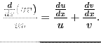
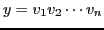
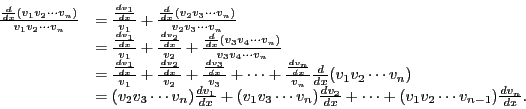

Now in dividing both sides of equation (V) by ,
this formula assumes the form

If then we have the product of functions
,
we may write

The derivative of the product of a finite number
of functions is equal to the sum of all the products that
can be formed by multiplying the derivative of each function
by all the other functions.